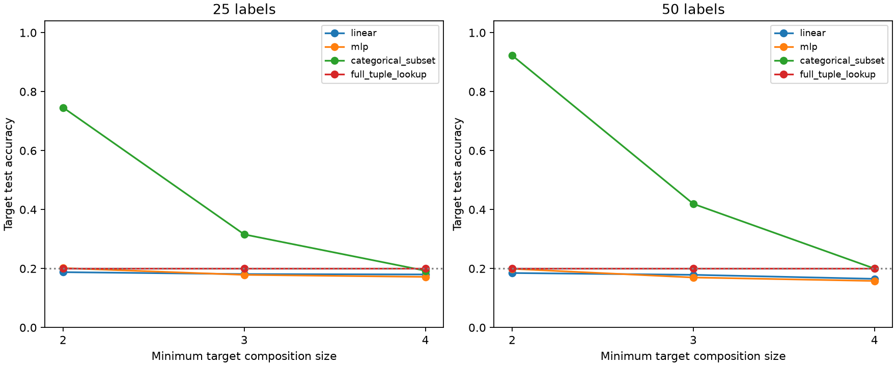

已完成 36/36 个条件，共 2016 个读出端点。使用 变换结构试验的 27 个训练编码器和 9 个配对初始编码器。八个共同目标均与所有源任务的任何非零标量倍数不同；同一目标因源组合不同，可需要两、三或四列源答案。
每个目标从 625 输入中，按类别随机留出 125 个目标测试输入；支持预算 25、50，类别平衡且嵌套。所有源条件和初始化在同一输入基世界内共用目标支持与测试。源预训练已见全部 625 输入，这属于新任务标签的转导迁移，不检验新实体。

图按数学分析给出的目标组合阶数汇总。目标和条件组成在各阶数中不同，因此更有辨别力的比较是固定世界、初始化、目标和标签预算，在 3 个源组合间比较较低阶与较高阶；下表保留全部符合条件的目标。
| 标签预算 | 读出规则 | 固定目标后：低阶减高阶 | 正差值端点 |
|---|---|---|---|
| 25 | linear | -0.12 pp | 31/72 |
| 25 | mlp | +0.76 pp | 41/72 |
| 25 | categorical_subset | +27.33 pp | 69/72 |
| 50 | linear | +0.30 pp | 35/72 |
| 50 | mlp | +1.09 pp | 42/72 |
| 50 | categorical_subset | +36.43 pp | 72/72 |
线性与 MLP 头仅接收隐藏特征和目标支持标签，均使用预先固定的 200 更新、学习率 0.01，支持集均值与标准差用于特征标准化；所有源与随机条件相同。神经读出的配对随机基线另存，不用类别查表成绩替代神经迁移。
通用类别子集查表接收已训练源头解码出的类别与目标支持标签，枚举最小支持集一致子集；它不接收目标系数或数学组合阶数。完整四列查表作为另一个基线。类别查表没有神经随机编码器对应项，因此不计算其神经迁移收益。
训练前登记 · 冻结执行代码与协议 · 汇总 · 完整端点 · 神经迁移收益 · 固定目标的阶数对照 · 核验 · PDF 图